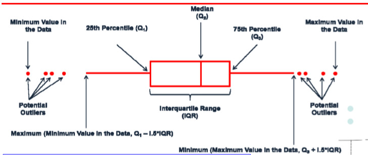
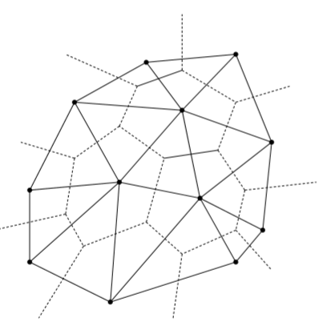

# 空间统计分析基础
# 前言
空间分析是用来分析空间/地理对象的几何，拓扑和属性数据方法
通常是一般统计方法在分析地理(空间)问题上的扩展
地理(空间)现象通常具有位置(显式/隐式)和相对位置关系(拓扑)
地理(空间)问题的研究通常是位置和位置关系依赖的
需要在一般统计方法上发展针对数据位置信息进行处理
分析的结果通常也是位置和位置关系相关的-(时)空间模式
总体来看, 空间分析的处理过程与一般统计方法是一致的
# 基于经典统计方法的（空间）分析步骤
- 研究问题的提出
- 数据的收集与处理
- 探索性分析
- 确定假设（猜测）
- 建模和检验
- 统计结果分析
- 结果呈现与问题结论描述
优先考虑数据类型，数据表达方式，数据的位置
# 空间数据类型
MAUP现象
- 尺度和分区不一样
导致结论不一样
# 空间坐标
# 基础统计知识
# 概率与概率分布
概率(Probability)-是对一个(随机)事件发生的可能性的度量，一般用0到1之 间的实数表示，0-绝对不会发生，1-一定会发生。
概率密度函数(Probability density function, PDF)-刻画连续型随机变量 取不同值的相对可能性大小(relative likelihood) 。
概率质量函数(Probability mass function，PMF)-用于刻画离散型随机变 量取值的相对可能性 。

概率密度函数的特点：
积分为1
概率密度可以大于1，保证积分为1即可
大概率小事件 vs 小概率大事件
随机变量的数字特征
实际问题的概率分布通常很难缺点，利用数字特征来刻画随机变量的特点，通过样本对概率总体进行估计。
样本均值（Mean）
样本方差（Sample variance）
中位数
分位数
点估计与区间估计
点估计是对总体特征参数给出单值的最佳估计。
区间估计是给出参数的可能值区间，称置信区间和可信区间。
基于t分布的区间估计
基于Bootstrapping区间估计
- Bootstrapping-利用样本资料经多次重复(有放回)随机抽样而产生的新样本进行分别计 算，并由计算结果的分布给出置信区间的估计

描述统计：boxplot
首先观测中位数（Median），看1/4位数和3/4位数，以及两者范围（长度）即为IQR，再两根线段，是由中位数×1.5IOR延申，最后在外面的数据是无效值。
统计假设检验/显著性检验
参数检验和非参数检验（假设检验）
- T检验
- Z得分（检验）
- U检验（秩检验）
- 正态性校验
案例
效应量（Effect-Size）
P值定性描述差异性，效应量定量描述差异的大小。
贝叶斯——T检验
# 相关分析
相关分析（Corrleation）测试随机变量直接的统计依赖性（dependence）
相关系数定量给出相关性的大小
相关性不能用于推断变量之间的因果关系
Pearson's r相关系数：一种参数方法，衡量变量之间的线性相关性，反映整个样本的平均响应。
论文表达：A与B存在显著的正线性相关（p<0.01，R=0.9）
【描述现象和数学表达，即要显著性和相关性】
秩相关Spearman's rho：是一种测试统计依赖性的非参数 方法，适用于连续与离散型变量，刻画的是随机变量之间的单调（monotonic） 关系，测量的是样本对应排序的响应，与绝对值大小无关，对异常值不敏感
# 矢量数据分析
# 矢量数据模型
矢量数据模型，是一种离散对象模型，在空间参照系统中，采用点及其坐标将离散的空间要素表示为点，线，面等几何对象，并将几何对象及其空间分析组织成方便计算机数据处理的空间文件或者空间数据库。
OGC Simale Feature模型
拓扑数据结构
不规则三角网模型（Delaunay TIN）
网络模型(图论)
# 不规则三角网
不规则三角网（ TIN ），用一组互不重叠的三角形来近 似表示地形或曲面的矢量数据格式。通常TIN由点图层 生成，每个点都与其最邻近点连接，且三角形尽量密集排列的原则，有时TIN还可以增加隔断线等约束条件。
规则
- 任何一个三角形的外接圆内不能包含任何其他离散点
- 最小角最大准则：相邻两个三角形构成凸四边形，在交换对角线之后，六个内角的最小者不再增大
TIN也是一个矢量拓扑数据结构，内含节点（node），边（edge），三角形（face）
基本数据：
- 点高程
- 三角网
- 面片
派生数据：
- 等高线
- 面片坡度，坡向
# 矢量分析主要思路与操作方法
首先确保空间对象具有统一空间参考系统，然后接下分析空间对象自身的几何特性，空间对象之间的位置关系，几何运算，随后分析空间数据图层之间的叠置分析。
空间对象的测度指标
最小外接矩形：Minimum Boundary Box
最大内切圆：Maximum Volume Inscribed Ellipsoid
缓冲区：Buffer
长度
质心
周长，面积
分区
空间对象之间的关系度量
距离量测，取决于坐标系或者数据组织方式，如/平面坐标系的欧式距离，球面坐标系的大圆弧，线性空间中两点距离（路径）
大圆弧距离
成本距离
考虑阻抗因子
线性参考系统（网络模型与位置服务）
数据探查分析
- 采样方案
- 可视化分析
【未完待续，部分内容】